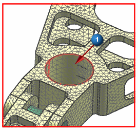
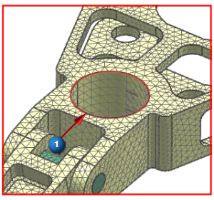
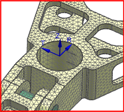

Assign the nodal displacement coordinate systems
Assign the local coordinate system to the displacement coordinate systems of nodes associated with the cylindrical face of the large hole in the knuckle.
The displacement coordinate system provides the node's frame of reference for the structural degrees of freedom.
|
Nodes and Elements |
 Assign Nodal Coordinate System (Nodes group)
Assign Nodal Coordinate System (Nodes group)
-
Type
-
Displacement

-
Type Filter (Top Border bar)
Polygon Face
-



-
Displacement CSYS
-
CSYS
Cylindrical
-
Specify CSYS
 CSYS of Object
CSYS of Object -
Type Filter (Top Border bar)
Polygon Edge
-

-
 Interior and Boundary Nodes
Interior and Boundary Nodes -
Apply

Leave the Assign Nodal CSYS dialog box open for the next step.